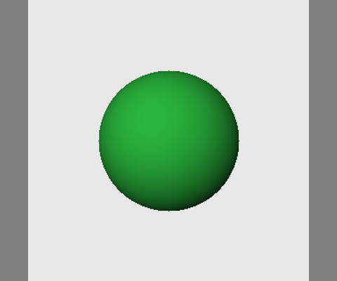
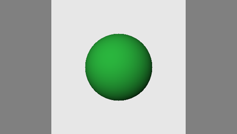

sample-01
Reference

Source
Raw
Finished
Score all frames and both stages before opening the separate unblinding key. No independent review has yet occurred. Source aspect, fitting and resolution may reveal a condition; blinding conceals labels only.
# Frozen acceptance rubric — phase 2 Written after inspecting the five existing development runs, before selecting or running a new candidate. These observations are development evidence, not prospective tests. Do not change thresholds after viewing the new tests. Score each dimension 0–4, inspect every raw frame at native size and normal speed, then inspect the finished result separately. Scores are ordinal agent assessments until an independent reviewer supplies their own sheet. | Dimension | 0 | 1 | 2 | 3 (pass) | 4 | |---|---|---|---|---|---| | Reference fidelity | absent/wrong subject | superficial color | some attributes, major drift | recognizable subject, defining attributes persist | close appearance, fine attributes stable | | Motion | absent/opposite action | isolated movement only | recognizable action, wrong phase or missing important limbs | principal source action and timing recognizable | close timing, direction, extent and articulation | | Temporal stability | collapse | frequent severe changes | intermittent conspicuous changes | minor changes, continuous coherent subject | stable throughout | | Anatomy/shape | catastrophic collapse | duplicate/missing major parts | obvious transient defects | plausible major anatomy/shape throughout | consistently plausible fine detail | | Photorealism (realistic references only) | unrelated rendering | clearly broken | plastic/obviously synthetic details | coherent live-action appearance at native size | convincing fine skin/material/lighting detail | A visual pass requires every applicable dimension >=3, >=80% of visible-subject frames retaining defining attributes (for the private portrait, two plausible lenses and their bridge), and no duplicated limb, subject collapse, or extra subject in any frame. A single good still cannot pass. Out-of-frame important motion counts as missing motion; do not reframe the criterion after inference. Object preservation gates, inherited from phase 1: composite PNG pixels outside the saved binary mask must match source exactly (max error 0); report raw and encoded outside-region MAE/p95 separately, excluding an 8px boundary. A raw or encoded preservation pass requires MAE <=3/255 and p95 <=10/255. Compositing does not establish that the model preserved the background. Synthetic object centroid error <=.10 image diagonal; motion endpoint error <=.12 where a meaningful annotation exists. Heuristics must be shown with overlays and cannot override visual failure. Technical gate: correct size, 17/33 decodable frames and declared 8fps; reproducible input/graph/model hashes; no undocumented processing. Aspect/rotation oracle and source hashes are independent technical checks, not perceptual proof. New test set: one unseen realistic recording and one independently specified synthetic sequence for each capability, licensed for redistribution. Freeze inputs/annotations and candidate hashes before any generated test-output review. New synthetic scenes may share renderer limitations; never call them independent real-world recordings. Old holdouts and private temporal/mirror crops remain development/stress evidence. No population success-rate claim from this tiny set. Budget: retain phase limit 16 GPU attempts / 6000 measured worker seconds, with failed attempts charged their observed client time for stopping purposes. Stop new jobs if the UI credit delta reaches $6, fewer than $2 included credits remain, cash is nonzero, the account $0 spend cap is absent, two consecutive attempts fail technically, or the remaining experiments cannot change the decision. No rerolling failed quality tests or selecting a best seed as a held-out result. Independent professional scoring and independent clean-machine reproduction are explicitly pending. Agent scoring and a second local checkout are not substitutes.

